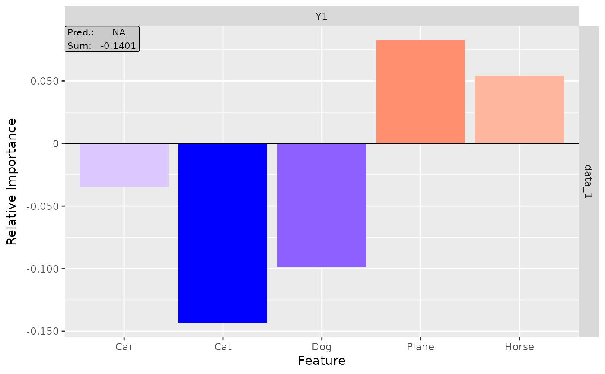
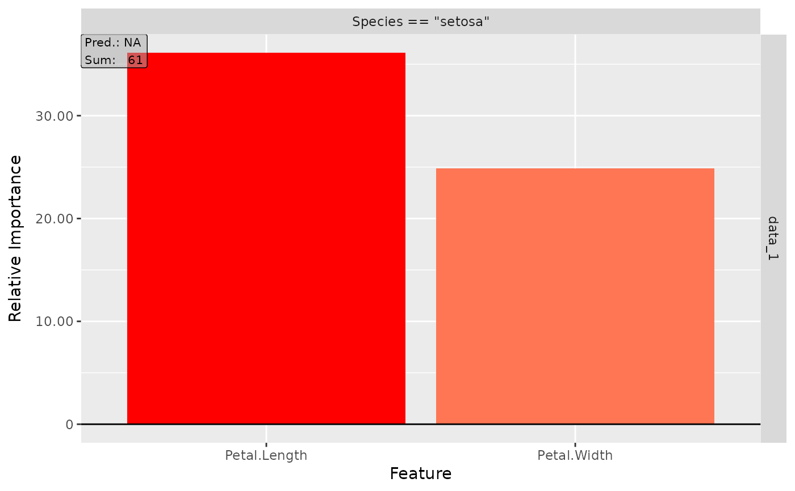
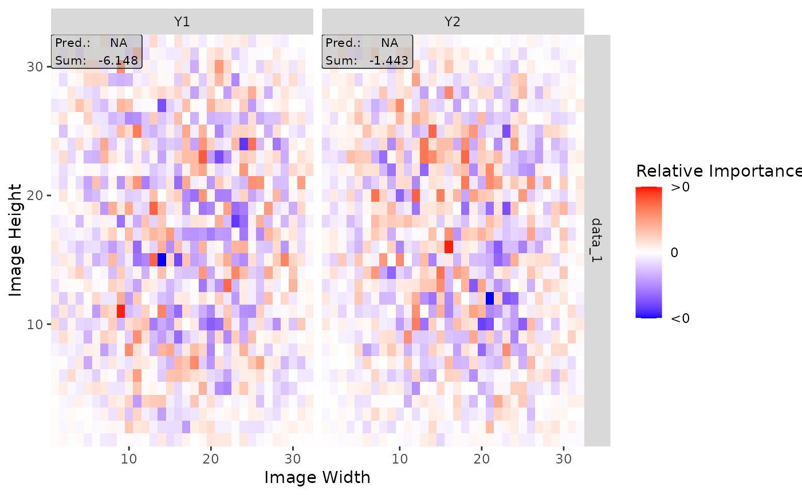

This class implements the Connection Weights method investigated by Olden et al. (2004) which results in a feature relevance score for each input variable. The basic idea is to multiply up all path weights for each possible connection between an input feature and the output node and then calculate the sum over them. Besides, it is a global interpretation method and independent of the input data. For a neural network with \(3\) hidden layers with weight matrices \(W_1\), \(W_2\) and \(W_3\) this method results in a simple matrix multiplication $$W_1 * W_2 * W_3. $$
J. D. Olden et al. (2004) An accurate comparison of methods for quantifying variable importance in artificial neural networks using simulated data. Ecological Modelling 178, p. 389–397
converterThe converter of class Converter with the stored and torch-converted model.
channels_firstThe data format of the result, i.e. channels on
last dimension (FALSE) or on the first dimension (TRUE). If the
data has no channels, use the default value TRUE.
dtypeThe type of the data and parameters (either 'float'
for torch::torch_float or 'double' for torch::torch_double).
resultThe methods result as a torch tensor of size
(dim_in, dim_out) and with data type dtype.
output_idxThis vector determines for which outputs the method
will be applied. By default (NULL), all outputs (but limited to the
first 10) are considered.
new()ConnectionWeights$new( converter, output_idx = NULL, channels_first = TRUE, dtype = "float" )
converterThe converter of class Converter with the stored and torch-converted model.
output_idxThis vector determines for which output indices the
method will be applied. By default (NULL), all outputs (but limited
to the first 10) are considered.
channels_firstThe data format of the result, i.e. channels on
last dimension (FALSE) or on the first dimension (TRUE). If the
data has no channels, use the default value TRUE.
dtypeThe data type for the calculations. Use
either 'float' for torch::torch_float or 'double' for
torch::torch_double.
get_result()This function returns the result of the Connection Weights method
either as an array ('array'), a torch tensor ('torch.tensor' or
'torch_tensor') of size (dim_in, dim_out) or as a data.frame
('data.frame').
ConnectionWeights$get_result(type = "array")
typeThe data type of the result. Use one of 'array',
'torch.tensor', 'torch_tensor' or 'data.frame'
(default: 'array').
The result of this method for the given data in the chosen type.
plot()This method visualizes the result of the Connectio nWeight method in a
ggplot2::ggplot. You can use the argument output_idx to select
individual output nodes for the plot. The different results for the
selected outputs are visualized using the method ggplot2::facet_grid.
You can also use the as_plotly argument to generate an interactive
plot based on the plot function plotly::plot_ly.
ConnectionWeights$plot( output_idx = NULL, aggr_channels = "sum", preprocess_FUN = identity, as_plotly = FALSE )
output_idxAn integer vector containing the numbers of the
output indices whose result is to be plotted, e.g. c(1,4) for the
first and fourth model output. But this vector must be included in the
vector output_idx from the initialization, otherwise, no results were
calculated for this output node and can not be plotted. By default
(NULL), the smallest index of all calculated output nodes is used.
aggr_channelsPass one of 'norm', 'sum', 'mean' or a
custom function to aggregate the channels, e.g. the maximum
(base::max) or minimum (base::min) over the channels or only
individual channels with function(x) x[1]. By default ('sum'),
the sum of all channels is used.
Note: This argument is used only for 2D and 3D inputs.
preprocess_FUNThis function is applied to the method's result
before generating the plot. By default, the identity function
(identity) is used.
as_plotlyThis boolean value (default: FALSE) can be used to
create an interactive plot based on the library plotly. This function
takes use of plotly::ggplotly, hence make sure that the suggested
package plotly is installed in your R session.
Advanced: You can first
output the results as a ggplot (as_plotly = FALSE) and then make
custom changes to the plot, e.g. other theme or other fill color. Then
you can manually call the function ggplotly to get an interactive
plotly plot.
Returns either a ggplot2::ggplot (as_plotly = FALSE) or a
plotly::plot_ly object (as_plotly = TRUE) with the plotted results.
clone()The objects of this class are cloneable with this method.
ConnectionWeights$clone(deep = FALSE)
deepWhether to make a deep clone.
#----------------------- Example 1: Torch ---------------------------------- library(torch) # Create nn_sequential model model <- nn_sequential( nn_linear(5, 12), nn_relu(), nn_linear(12, 1), nn_sigmoid() ) # Create Converter with input names converter <- Converter$new(model, input_dim = c(5), input_names = list(c("Car", "Cat", "Dog", "Plane", "Horse")) ) # Apply method Connection Weights cw <- ConnectionWeights$new(converter) #> Backwardpass 'ConnectionWeights': #> | | | 0% | |=================================== | 50% | |======================================================================| 100% # Print the result as a data.frame cw$get_result("data.frame") #> feature class value #> 1 Car Y1 -0.32534206 #> 2 Cat Y1 0.23269914 #> 3 Dog Y1 -0.04457073 #> 4 Plane Y1 -0.04277043 #> 5 Horse Y1 0.07555910 # Plot the result plot(cw)  #----------------------- Example 2: Neuralnet ------------------------------ library(neuralnet) data(iris) # Train a Neural Network nn <- neuralnet((Species == "setosa") ~ Petal.Length + Petal.Width, iris, linear.output = FALSE, hidden = c(3, 2), act.fct = "tanh", rep = 1 ) # Convert the trained model converter <- Converter$new(nn) # Apply the Connection Weights method cw <- ConnectionWeights$new(converter) #> Backwardpass 'ConnectionWeights': #> | | | 0% | |======================= | 33% | |=============================================== | 67% | |======================================================================| 100% # Get the result as a torch tensor cw$get_result(type = "torch.tensor") #> torch_tensor #> 36.1054 #> 24.8945 #> [ CPUFloatType{2,1} ] # Plot the result plot(cw)  #----------------------- Example 3: Keras ---------------------------------- library(keras) if (is_keras_available()) { # Define a model model <- keras_model_sequential() model %>% layer_conv_1d( input_shape = c(64, 3), kernel_size = 16, filters = 8, activation = "softplus" ) %>% layer_conv_1d(kernel_size = 16, filters = 4, activation = "tanh") %>% layer_conv_1d(kernel_size = 16, filters = 2, activation = "relu") %>% layer_flatten() %>% layer_dense(units = 64, activation = "relu") %>% layer_dense(units = 2, activation = "softmax") # Convert the model converter <- Converter$new(model) # Apply the Connection Weights method cw <- ConnectionWeights$new(converter) # Get the result as data.frame cw$get_result(type = "data.frame") # Plot the result for all classes plot(cw, output_idx = 1:2) } #> Loaded Tensorflow version 2.7.0 #> Backwardpass 'ConnectionWeights': #> | | | 0% | |============ | 17% | |======================= | 33% | |=================================== | 50% | |=============================================== | 67% | |========================================================== | 83% | |======================================================================| 100%  # ------------------------- Advanced: Plotly ------------------------------- # If you want to create an interactive plot of your results with custom # changes, you can take use of the method plotly::ggplotly library(ggplot2) library(plotly) #> #> Attaching package: ‘plotly’ #> The following object is masked from ‘package:ggplot2’: #> #> last_plot #> The following object is masked from ‘package:stats’: #> #> filter #> The following object is masked from ‘package:graphics’: #> #> layout library(neuralnet) data(iris) nn <- neuralnet(Species ~ ., iris, linear.output = FALSE, hidden = c(10, 8), act.fct = "tanh", rep = 1, threshold = 0.5 ) # create an converter for this model converter <- Converter$new(nn) # create new instance of 'LRP' cw <- ConnectionWeights$new(converter) #> Backwardpass 'ConnectionWeights': #> | | | 0% | |======================= | 33% | |=============================================== | 67% | |======================================================================| 100% library(plotly) # Get the ggplot and add your changes p <- plot(cw, output_idx = 1) + theme_bw() + scale_fill_gradient2(low = "green", mid = "black", high = "blue") #> Scale for 'fill' is already present. Adding another scale for 'fill', which #> will replace the existing scale. # Now apply the method plotly::ggplotly with argument tooltip = "text" plotly::ggplotly(p, tooltip = "text")